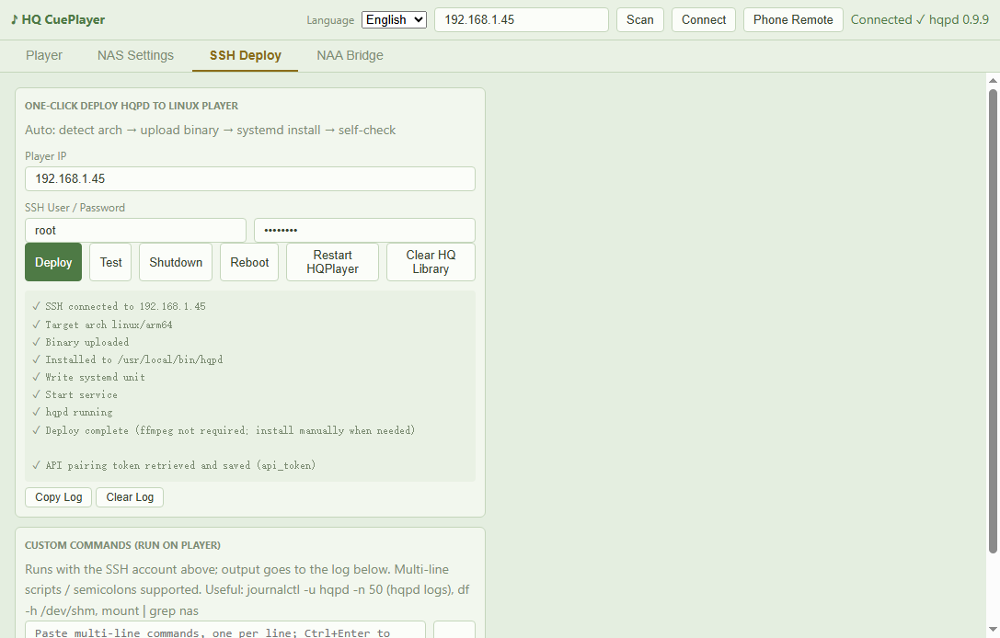
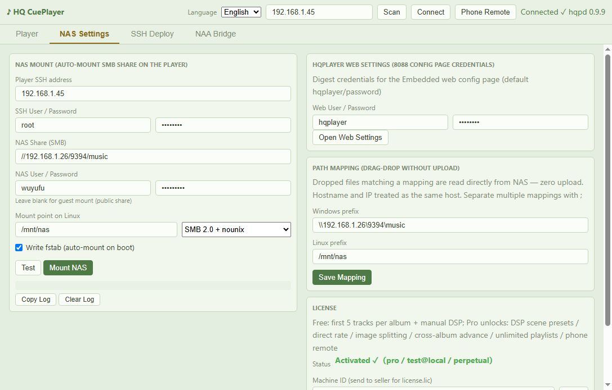
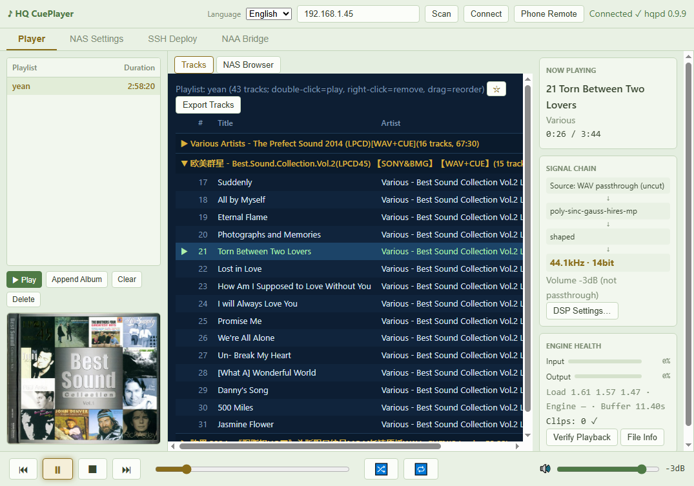
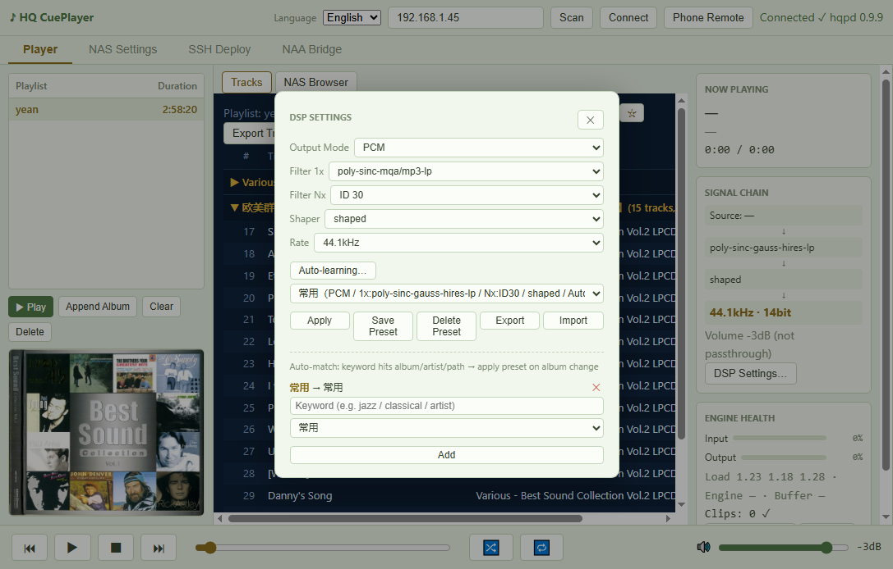
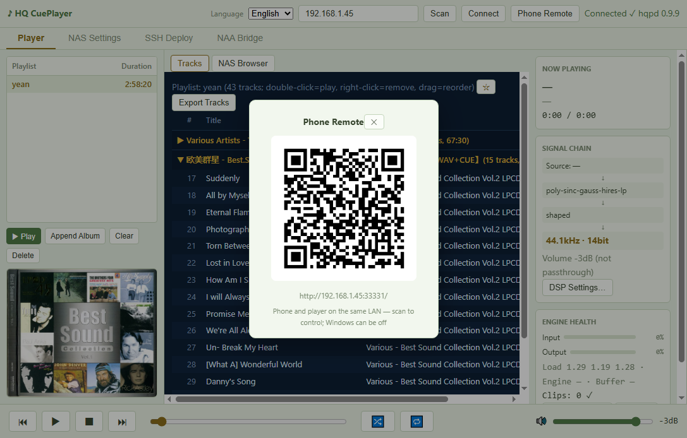
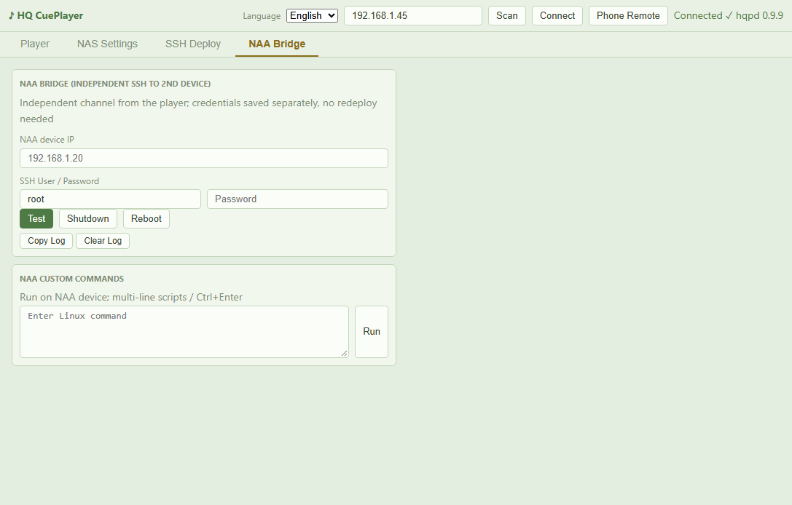

HQ CuePlayer is a companion controller for HQPlayer Embedded. HQPlayer does not play CUE sheets natively — HQ CuePlayer fixes that, turning single-file FLAC/WAV rips (and NRG/ISO/BIN images) into a track-level, gapless, cross-album playlist experience. It also turns every Linux chore — deployment, NAS mounts, DSP tuning — into one-click operations.
| Item | Notes |
|---|---|
| A player running HQPlayer Embedded | x86 box, TV box or dev board (amd64 / arm64), with an activated HQPlayer license |
| A Windows PC | Runs HQ CuePlayer (Win10/11), same LAN as the player |
| A NAS (optional, recommended) | SMB share holding your music; without one you can still drag-upload from Windows |
| An NAA bridge (optional) | A second device running NAA (e.g. a Pi feeding your DAC) |
| SSH credentials | For the player (HQPlayer OS defaults to root with the password you set at install) |
The server side of HQ CuePlayer is hqpd, a tiny daemon living on the player. Deploy once, forget forever:
✓ API pairing token retrieved means secure pairing completed automatically. Nothing else to configure.
hqcueplayer.json on your own PC. Nothing is uploaded anywhere.This lets the player read music straight off your NAS — the foundation of instant, zero-upload playback.
//192.168.1.26/music) and NAS credentials. Leave credentials blank for public shares — guest mode kicks in automatically.
Tell HQ CuePlayer "this Windows path equals that player path". From then on, dropping a CUE into the window makes the player read the original file straight off the NAS — multi-GB rips open instantly, not a single byte uploaded.
| Setting | Example |
|---|---|
| Windows prefix | \\192.168.1.26\9394\music (as seen in Explorer; separate multiple prefixes with ;) |
| Linux prefix | /mnt/nas (the mount point from Step 2) |
Click Save Mapping. Hostname and IP are treated as the same host, so either spelling works.
Connected ✓ in the top-right means you're ready.
| Action | Result |
|---|---|
| Double-click a track | Play from this track onward |
| Ctrl+click a track | Queue it next (after the current track) |
| Right-click a track | Album view: skip (strikethrough); Playlist view: remove from list |
| Drag a track | Reorder the playlist (saved automatically) |
| Click an album header ▶/▼ | Collapse/expand the album |
| DSP Settings (right panel) | Output mode / filters / shaper / rate (see §7) |
| 🔀 🔁 (footer) | Shuffle; repeat: off → all → one |
Click DSP Settings… in the right panel: output mode (PCM / DSD), filter 1x/Nx, shaper and rate — all applied in real time.

Click Phone Remote and scan the QR code: play, skip, volume and DSP presets from any phone browser — no app to install. The phone talks directly to the player over your LAN, so your Windows PC can be switched off afterwards.

If your DAC hangs off a second device (NAA), the NAA Bridge page provides an independent SSH channel: connection test, shutdown, reboot and custom commands, with credentials stored separately from the player. Playback control itself doesn't need this page — it's a convenience for tinkerers.

| Free | Pro | |
|---|---|---|
| CUE playback | First 5 tracks per album | Unlimited |
| Manual DSP / Learn All Filters | ✓ | ✓ |
| DSP presets / direct rate / image splitting | — | ✓ |
| Cross-album advance / playlists / phone remote | 1 playlist × 10 tracks | ✓ Unlimited |
| Duration | Forever, no watermarking | Perpetual, one-time purchase |
To activate: copy the Machine ID from the License panel (NAS Settings page, bottom-right) and send it to the seller. Import the license.lic you receive via Import License File. The license is bound to the player's hardware and verified fully offline — no internet connection, no phone-home, ever.
ssh: handshake failed: EOF on deploy or mount?The player's SSH service (dropbear) rate-limits rapid repeated connections. Wait 1–2 minutes and retry — it is not a wrong password.
① Confirm the PC and player are on the same LAN. ② Use Scan — the IP may have changed. ③ Re-run Deploy to make sure hqpd is installed and running.
Click Test first. Port unreachable → check IP/firewall. Port reachable but mount fails → check the log: nine times out of ten it's a typo in the share path or credentials. For ancient NAS boxes, switch the protocol to SMB 2.0 or 1.0.
Shouldn't happen. Worldwide charset auto-detection is built in — GBK, Big5, Shift-JIS, EUC-KR, UTF-8 and Windows-125x are all handled.
Stuttering: engine overload — lower the rate or pick a lighter filter. Clipping: too much gain in the DSP chain — pull volume down 1–2 dB.
No. The license binds to the hardware (board + NIC). Re-import your original license.lic after reinstalling. For a new machine, contact the seller.
No. There is no telemetry of any kind. License verification is offline, and all configuration lives on your own PC and player.